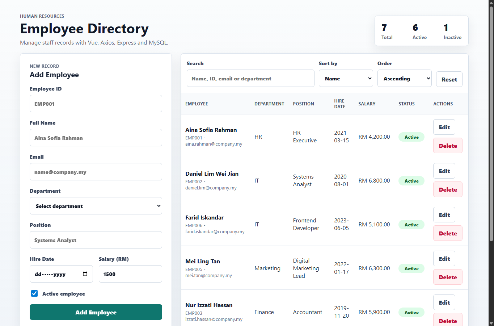
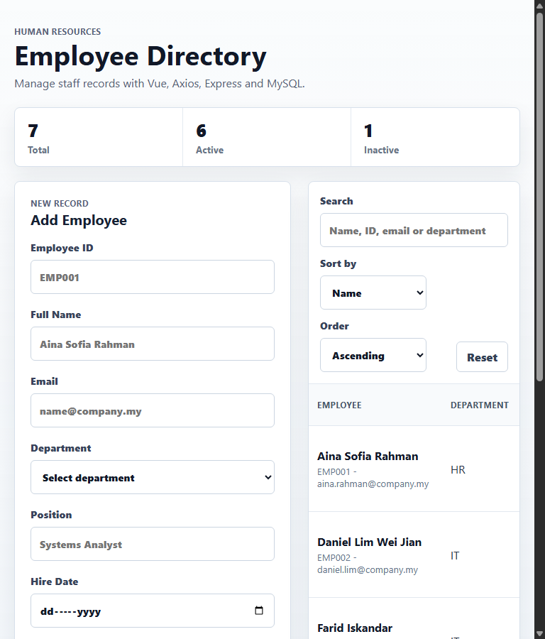

The application is a single-page Vue 3 frontend talking to an Express + MySQL backend. Figure 1 shows the laptop view with the summary cards, add/edit form, search and sort controls, paginated table, active/inactive badges, and Malaysian Ringgit salary formatting. Figure 2 shows the same UI re-flowed at tablet width: the form stacks above the table, summary cards wrap, and no horizontal scrolling is needed.

Figure 1. Laptop view (≥1024 px). Summary cards, paginated table with badges, RM-formatted salary, and edit/delete actions.

Figure 2. Tablet view (≥768 px). The CSS grid in App.vue
collapses to a single column.
| Learning Outcome | How the project satisfies it | Where to look (file : line) |
|---|---|---|
| LO1. Connect Vue to a REST backend and manage the request/response lifecycle. |
App.vue holds the employees array and a loading
flag. onMounted triggers loadEmployees(), which awaits the API
and updates state; errors surface via an errorMessage banner.
|
src/App.vue:28 — onMounted(loadEmployees)src/App.vue:30–53 — loading/error lifecyclesrc/App.vue:148 — error banner
|
| LO2. Configure and use Axios with interceptors and async/await. |
A single axios.create() instance defines baseURL,
timeout, and default headers. A request interceptor logs every outgoing
call; a response interceptor maps every error shape (server, network, timeout) to a
single {message, status, errors} object. All call sites use
async/await — no inline axios.get(...) in components.
|
src/services/api.js:3 — single instancesrc/services/api.js:12 — request interceptorsrc/services/api.js:18 — response interceptorsrc/services/api.js:35–52 — async/await calls
|
| LO3. Build validated Vue forms using v-model and emit results. |
EmployeeForm.vue uses v-model.trim on text fields and
v-model.number on Salary. validate() enforces all seven
brief rules — ^EMP[0-9]{3,5}$, name ≥ 3, email regex, department
dropdown, position, hire date ≤ today, salary 1500–50000. Inline
<span class="field-error"> messages render per field, and the form
short-circuits when any error exists. Validated data is sent to the parent via
emit('save', ...).
|
src/components/EmployeeForm.vue:73–94 — rulessrc/components/EmployeeForm.vue:135,177 — .trim / .numbersrc/components/EmployeeForm.vue:50 — emit('save', ...)
|
| LO4. Full CRUD against MySQL with prepared statements, server-side search and sort. |
Express implements GET/POST/PUT/DELETE /employees. Search uses
LIKE on four columns (name, empId, email, department). Sort is restricted
to a whitelist map {name, hireDate, salary, department} — client
input never reaches the SQL string. All values are passed as ?
placeholders to pool.execute; pagination LIMIT/OFFSET are integer-clamped
and parameterised. mysql2/promise provides the connection pool.
|
server/index.js:12 — sort whitelistserver/index.js:26–73 — list/search/sortserver/index.js:89,120,154 — create/update/deleteserver/db.js:4 — mysql.createPool
|
App.vue owns the employees array,
the active filters, pagination metadata, and the currently selected employee.
Children never call the API directly.
EmployeeForm emits
save / cancel; EmployeeList emits
edit / delete / page-change;
SearchSortControls emits change with a debounced search and
whitelisted sort keys.
src/services/api.js is the only file that
imports Axios. Components import named functions (fetchEmployees,
createEmployee, …) and remain transport-agnostic.
EmployeeForm.validate() for fast inline feedback, and once in
server/index.js:validateEmployee as the authoritative gate before any SQL
write. Duplicate empId/email are converted to friendly per-field
errors via the MySQL ER_DUP_ENTRY handler.
ORDER BY. Solved by mapping req.query.sortBy through a fixed
whitelist object; unknown keys fall back to name. The direction is reduced to
the literal string 'ASC' or 'DESC' before interpolation.
{message, status, errors} object so the UI banner and
per-field error display always work the same way.
localhost to ::1 while Laragon’s MySQL listens on
127.0.0.1. The pool and CORS allow-list both pin to 127.0.0.1 to
avoid intermittent ECONNREFUSED.
page, pageSize) with clamped integers and a single SQL count query that also returns active/inactive totals in one round trip.SUM(CASE WHEN active ...) so the totals are always consistent with the filtered query.The following official documentation was consulted during implementation; all code was written by the author.
<script setup>, props/emits: https://vuejs.org/guide/https://vitejs.dev/config/https://axios-http.com/docs/interceptorshttps://expressjs.com/en/5x/api.htmlhttps://github.com/sidorares/node-mysql2#using-prepared-statementsIntl.NumberFormat for MYR currency formatting: https://developer.mozilla.org/en-US/docs/Web/JavaScript/Reference/Global_Objects/Intl/NumberFormat